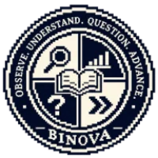
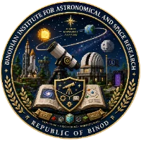
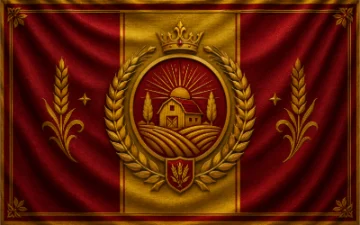
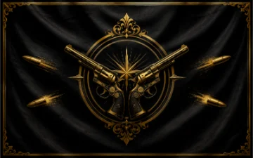
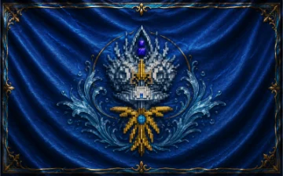
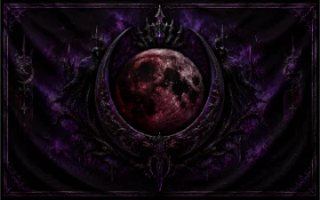

BINOVA
Binod Institute for Novel Observation, Vision & Advancement
An institution devoted to discovery, rigorous learning, research and the advancement of knowledge.
OpeningNot yet published
One World • Many Nations • Shared Prosperity
One world, six nations, and the institutions that govern, study and record it — all in one place. The date below is not Earth's: it is the world's own.
Each institution keeps its own seal, colour and voice. The gateway only connects them.

The official government portal of the Binod World Government.

Official scientific research authority — astronomy, space research and temporal physics. Keeper of the Unified Binod Calendar.

Official intelligence, scientific security and federal investigation authority of the Binod World Government.
The public search engine for Binod World: government publications, BIASR research, declassified RIID records and registered organisations.

An institution devoted to discovery, rigorous learning, research and the advancement of knowledge.
The Binod World Stock Exchange — a system that exists inside the world itself.
A signal on the network that has not been identified.
Only relationships that are written down in the institutions’ own records are drawn here.

Finance & Central Administration

Maritime Trade & Shipping

Agriculture & Food Security

Trade, Commerce & Border Markets

Water Resources & Naval Operations

Strategic Security & National Intelligence
Snapshot of the government register, as of 22 November 2026.
Official publications live with the Government. Search all of them with VANTA.